!pip3 install tutormagic
%load_ext tutormagic
Requirement already satisfied: tutormagic in /home/tigarto/miniconda3/lib/python3.7/site-packages (0.3.0)
Requirement already satisfied: notebook>=3.0 in /home/tigarto/miniconda3/lib/python3.7/site-packages (from tutormagic) (6.0.1)
Requirement already satisfied: tornado>=5.0 in /home/tigarto/miniconda3/lib/python3.7/site-packages (from notebook>=3.0->tutormagic) (6.0.3)
Requirement already satisfied: pyzmq>=17 in /home/tigarto/miniconda3/lib/python3.7/site-packages (from notebook>=3.0->tutormagic) (18.1.1)
Requirement already satisfied: nbformat in /home/tigarto/miniconda3/lib/python3.7/site-packages (from notebook>=3.0->tutormagic) (4.4.0)
Requirement already satisfied: jinja2 in /home/tigarto/miniconda3/lib/python3.7/site-packages (from notebook>=3.0->tutormagic) (2.10.3)
Requirement already satisfied: ipykernel in /home/tigarto/miniconda3/lib/python3.7/site-packages (from notebook>=3.0->tutormagic) (5.1.3)
Requirement already satisfied: nbconvert in /home/tigarto/miniconda3/lib/python3.7/site-packages (from notebook>=3.0->tutormagic) (5.6.1)
Requirement already satisfied: Send2Trash in /home/tigarto/miniconda3/lib/python3.7/site-packages (from notebook>=3.0->tutormagic) (1.5.0)
Requirement already satisfied: prometheus-client in /home/tigarto/miniconda3/lib/python3.7/site-packages (from notebook>=3.0->tutormagic) (0.7.1)
Requirement already satisfied: terminado>=0.8.1 in /home/tigarto/miniconda3/lib/python3.7/site-packages (from notebook>=3.0->tutormagic) (0.8.3)
Requirement already satisfied: traitlets>=4.2.1 in /home/tigarto/miniconda3/lib/python3.7/site-packages (from notebook>=3.0->tutormagic) (4.3.3)
Requirement already satisfied: jupyter-client>=5.3.1 in /home/tigarto/miniconda3/lib/python3.7/site-packages (from notebook>=3.0->tutormagic) (5.3.3)
Requirement already satisfied: ipython-genutils in /home/tigarto/miniconda3/lib/python3.7/site-packages (from notebook>=3.0->tutormagic) (0.2.0)
Requirement already satisfied: jupyter-core>=4.4.0 in /home/tigarto/miniconda3/lib/python3.7/site-packages (from notebook>=3.0->tutormagic) (4.6.1)
Requirement already satisfied: jsonschema!=2.5.0,>=2.4 in /home/tigarto/miniconda3/lib/python3.7/site-packages (from nbformat->notebook>=3.0->tutormagic) (3.2.0)
Requirement already satisfied: MarkupSafe>=0.23 in /home/tigarto/miniconda3/lib/python3.7/site-packages (from jinja2->notebook>=3.0->tutormagic) (1.1.1)
Requirement already satisfied: ipython>=5.0.0 in /home/tigarto/miniconda3/lib/python3.7/site-packages (from ipykernel->notebook>=3.0->tutormagic) (7.11.1)
Requirement already satisfied: pygments in /home/tigarto/miniconda3/lib/python3.7/site-packages (from nbconvert->notebook>=3.0->tutormagic) (2.5.2)
Requirement already satisfied: pandocfilters>=1.4.1 in /home/tigarto/miniconda3/lib/python3.7/site-packages (from nbconvert->notebook>=3.0->tutormagic) (1.4.2)
Requirement already satisfied: entrypoints>=0.2.2 in /home/tigarto/miniconda3/lib/python3.7/site-packages (from nbconvert->notebook>=3.0->tutormagic) (0.3)
Requirement already satisfied: testpath in /home/tigarto/miniconda3/lib/python3.7/site-packages (from nbconvert->notebook>=3.0->tutormagic) (0.4.4)
Requirement already satisfied: mistune<2,>=0.8.1 in /home/tigarto/miniconda3/lib/python3.7/site-packages (from nbconvert->notebook>=3.0->tutormagic) (0.8.4)
Requirement already satisfied: bleach in /home/tigarto/miniconda3/lib/python3.7/site-packages (from nbconvert->notebook>=3.0->tutormagic) (3.1.0)
Requirement already satisfied: defusedxml in /home/tigarto/miniconda3/lib/python3.7/site-packages (from nbconvert->notebook>=3.0->tutormagic) (0.6.0)
Requirement already satisfied: decorator in /home/tigarto/miniconda3/lib/python3.7/site-packages (from traitlets>=4.2.1->notebook>=3.0->tutormagic) (4.4.1)
Requirement already satisfied: six in /home/tigarto/miniconda3/lib/python3.7/site-packages (from traitlets>=4.2.1->notebook>=3.0->tutormagic) (1.12.0)
Requirement already satisfied: python-dateutil>=2.1 in /home/tigarto/miniconda3/lib/python3.7/site-packages (from jupyter-client>=5.3.1->notebook>=3.0->tutormagic) (2.8.1)
Requirement already satisfied: setuptools in /home/tigarto/miniconda3/lib/python3.7/site-packages (from jsonschema!=2.5.0,>=2.4->nbformat->notebook>=3.0->tutormagic) (45.2.0)
Requirement already satisfied: attrs>=17.4.0 in /home/tigarto/miniconda3/lib/python3.7/site-packages (from jsonschema!=2.5.0,>=2.4->nbformat->notebook>=3.0->tutormagic) (19.3.0)
Requirement already satisfied: pyrsistent>=0.14.0 in /home/tigarto/miniconda3/lib/python3.7/site-packages (from jsonschema!=2.5.0,>=2.4->nbformat->notebook>=3.0->tutormagic) (0.15.6)
Requirement already satisfied: importlib-metadata; python_version < "3.8" in /home/tigarto/miniconda3/lib/python3.7/site-packages (from jsonschema!=2.5.0,>=2.4->nbformat->notebook>=3.0->tutormagic) (1.3.0)
Requirement already satisfied: pexpect; sys_platform != "win32" in /home/tigarto/miniconda3/lib/python3.7/site-packages (from ipython>=5.0.0->ipykernel->notebook>=3.0->tutormagic) (4.7.0)
Requirement already satisfied: pickleshare in /home/tigarto/miniconda3/lib/python3.7/site-packages (from ipython>=5.0.0->ipykernel->notebook>=3.0->tutormagic) (0.7.5)
Requirement already satisfied: prompt-toolkit!=3.0.0,!=3.0.1,<3.1.0,>=2.0.0 in /home/tigarto/miniconda3/lib/python3.7/site-packages (from ipython>=5.0.0->ipykernel->notebook>=3.0->tutormagic) (3.0.2)
Requirement already satisfied: jedi>=0.10 in /home/tigarto/miniconda3/lib/python3.7/site-packages (from ipython>=5.0.0->ipykernel->notebook>=3.0->tutormagic) (0.15.2)
Requirement already satisfied: backcall in /home/tigarto/miniconda3/lib/python3.7/site-packages (from ipython>=5.0.0->ipykernel->notebook>=3.0->tutormagic) (0.1.0)
Requirement already satisfied: webencodings in /home/tigarto/miniconda3/lib/python3.7/site-packages (from bleach->nbconvert->notebook>=3.0->tutormagic) (0.5.1)
Requirement already satisfied: zipp>=0.5 in /home/tigarto/miniconda3/lib/python3.7/site-packages (from importlib-metadata; python_version < "3.8"->jsonschema!=2.5.0,>=2.4->nbformat->notebook>=3.0->tutormagic) (0.6.0)
Requirement already satisfied: ptyprocess>=0.5 in /home/tigarto/miniconda3/lib/python3.7/site-packages (from pexpect; sys_platform != "win32"->ipython>=5.0.0->ipykernel->notebook>=3.0->tutormagic) (0.6.0)
Requirement already satisfied: wcwidth in /home/tigarto/miniconda3/lib/python3.7/site-packages (from prompt-toolkit!=3.0.0,!=3.0.1,<3.1.0,>=2.0.0->ipython>=5.0.0->ipykernel->notebook>=3.0->tutormagic) (0.1.8)
Requirement already satisfied: parso>=0.5.2 in /home/tigarto/miniconda3/lib/python3.7/site-packages (from jedi>=0.10->ipython>=5.0.0->ipykernel->notebook>=3.0->tutormagic) (0.5.2)
Requirement already satisfied: more-itertools in /home/tigarto/miniconda3/lib/python3.7/site-packages (from zipp>=0.5->importlib-metadata; python_version < "3.8"->jsonschema!=2.5.0,>=2.4->nbformat->notebook>=3.0->tutormagic) (8.0.2)
The tutormagic extension is already loaded. To reload it, use:
%reload_ext tutormagic
import warnings
warnings.filterwarnings("ignore", category=DeprecationWarning)
Herencia¶
Importancia¶
La herencia es útil porque:
Permite crear jerarquías de clases relacionadas
Reduce la cantidad de código redundante en componentes de clases.
Permite el reuso de software lo cual, además de evitar la redundancia, facilita la comprensión y mantenimiento del sistema el sistema.
Sobre la herencia¶
La herencia es la propiedad que permite definir nuevas clases usando como base clases ya existentes. Cuando se establece una relación de herencia se esta diciendo que se esta creando una relación es un.
Clases base y clases derivadas¶
Dentro de la herencia se manejan dos conceptos importantes para definir la relacion entre clases; estos son:
Clase base: Conocida tambien como clase padre o superclase. Es la clase a partir dela cual se crean las clases derivadas.
Clase derivada: Clase nueva creada a partir de una existente. Esta tambien se conoce como subclase se denomina subclase. Mediante la relación de herencia es posible que la subclase herede caracteristicas de la clase base (tributos y métodos); ademas, la subclase puede agregar nuevas caracteristicas propias o incluso sobreescribir caracteristicas heredadas de la clase base.
La siguiente figura aterriza un poco los conceptos anteriores:
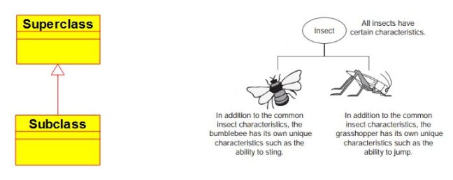
Jerarquia de clases¶
Tal y como se muestra en la siguiente figura, la herencia se puede considerar similar a una estructura de un árbol o jerárquica, donde una superclase se muestra con sus subclases.
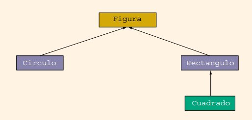
De la figura anterior tenemos que, las siguientes conclusiones:
La clase Figura es la clase base para las clases Circulo y Rectangulo, o dicho de otra manera, las clases Circulo y Rectangulo son clases derivadas (subclases o clases hijas) de la clase Figura.
La clase Cuadrado es una clase derivada de la clase Rectangulo, o tambien, dicho de otra manera, la clase Rectangulo es la clase padre de la clase cuadrado.
Implementación en java de las relaciones de herencia¶
La sintaxis general para derivar una subclase de una clase base ya existente es:
public class ClaseDerivada extends ClaseBase {
listaMiembros
}
Ejemplo¶
Retornemos a la figura anterior:
A continuación se muestra la forma como se definen las relaciones de herencia para cada una de las clases en java teniendo en cuenta el diagrama anterior:
Clase Figura
public class Figura {
listaDeMiembros
}
Clase Circulo
public class Circulo extends Figura{
listaDeMiembros
}
Clase Rectangulo
public class Rectangulo extends Figura{
listaDeMiembros
}
Clase Cuadrado
public class Cuadrado extends Rectangulo {
listaDeMiembros
}
Reglas a cerca de las superclases y las subclases¶
Los miembros private de la superclase son privados para la superclase; por lo tanto, los miembros de la(s) subclase(s) no pueden accederlos directamente. En otras palabras, cuando se escriben las definiciones de los métodos de la subclase, no se pueden acceder directamente los miembros privados de la superclase.
La subclase puede acceder directamente a los miembros publicos de la superclase.
La subclase puede incluir miembros de datos y/o de métodos adicionales.
La subclase puede sobreescribir, es decir, redefinir, los métodos publicos de la superclase. En la subclase se puede tener un método con el mismo nombre, número y tipos de parámetros como un método en la superclase.
Todos los atributos y metodos (a menos que se sobrescriban) de la superclase también lo son de la subclase. De manera similar, los métodos de la superclase (a menos que se anulen) también lo son de la subclase.
Herencia multiples y simple¶
Cada subclase, a su vez, puede convertirse en una superclase para una subclase futura (Como se ve en el caso de la clase Rectangulo mostrada en la figura anterior).
En lo que respecta a la herencia, esta puede ser simple o multiple:
Herencia simple: La subclase se deriva de una sola superclase.
Herencia multiple: La subclase se deriva de mas de una superclase.
En lo que respecta a Java, solo soporta sólo la herencia simple.
Aspectos importantes relacionados con la herencia¶
Para este ejemplo supongase que se da el siguiente codigo java en el cual se establece la relación entre dos clases. La clase base llamada Rectangulo y la clase derivada llamada Caja:
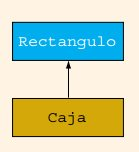
La implementación en java de esta relación de herencia muestra a continuación:
Clase Rectangulo:
public class Rectangulo {
// Codigo clase Caja
}
Clase Cada:
public class Caja extends Rectangulo {
// Codigo clase Caja
}
A continuación de muestra el diagrama UML asociado a la clase Rectangulo:
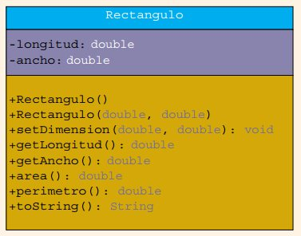
El código completo asociado al diagrama anterior se muestra a continuación:
public class Rectangulo {
private double longitud;
private double ancho;
public Rectangulo() {
longitud = 0;
ancho = 0;
}
public Rectangulo(double l, double a) {
setDimension(l, a);
}
public void setDimension(double l, double a) {
if (l >= 0)
longitud = l;
else
longitud = 0;
if (a >= 0)
ancho = a;
else
ancho = 0;
}
public double getLongitud() {
return longitud;
}
public double getAncho() {
return ancho;
}
public double area() {
return longitud * ancho;
}
public double perimetro() {
return 2 * (longitud + ancho);
}
public String toString() {
return ("Longitud = " + longitud + "; Ancho = " + ancho);
}
}
Por otro lado el diagrama UML asociado a la clase Caja se muestra a continuación:
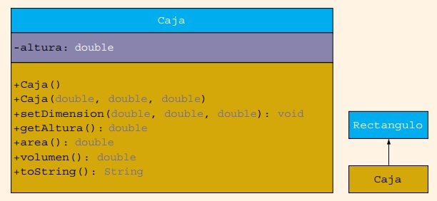
El código completo asociado al diagrama anterior se muestra a continuación:
class Caja extends Rectangulo {
private double altura;
public Caja() {
super();
altura = 0;
}
public Caja(double l, double a, double h) {
super(l, a);
altura = h;
}
public void setDimension(double l, double a, double h) {
super.setDimension(l, a);
if (h >= 0) {
altura = h;
}
else {
altura = 0;
}
}
public double getAltura() {
return altura;
}
public double area() {
return 2 * (getLongitud() * getAncho() +
getLongitud() * altura +
getAncho() * altura);
}
public double volumen() {
return super.area()*altura;
}
public String toString() {
return super.toString() + "; Height = " + altura;
}
}
Uso de métodos de una superclase en una subclase¶
En la relación entre una clase y una subclase se establecen las siguientes relaciones entre los metodos de la superclase y la subclase:
Herencia de los metodos: Al establecerse la relación de herencia, la clase derivada no solo hereda los atributos de la clase base sino tambien sus metodos. Esto hace posible que la clase derivada pueda hacer uso de los metodos de la clase base ademas de sus propios metodos. Veamos:
Rectangulo rectangulo1 = new Rectangulo(2,3);
Caja caja1 = new Caja(4,5,3);
double longitudRectangulo1 = rectangulo1.getLongitud();
caja1.setDimension(4.5,3.4);
double longitudCaja1 = caja1.getLongitud(); // La clase derivada esta haciendo uso del metodo
// getLongitud() heredado de la clase padre
Sobreescritura de los métodos: Esto tambien es conocido como redefinición. Este caso se da cuando la clase derivada define metodos con la misma firma (cabecera) ya que emplea el mismo nombre y parametros del metodo definido en la clase base.
/* Clase base */
public class Rectangulo {
private double longitud;
private double ancho;
//...
public double area() {
return longitud * ancho;
}
//...
}
/* Clase derivada */
class Caja extends Rectangulo {
private double altura;
// Metodo sobreescrito
public double area() {
return 2 * (getLongitud() * getAncho() +
getLongitud() * altura +
getAncho() * altura);
}
//...
}
Sobrecarga de los métodos: Se da cuando un metodo de la clase derivada tiene el mismo nombre de la clase derivada pero los parametros son diferentes.
/* Clase base */
public class Rectangulo {
private double longitud;
private double ancho;
//...
public void setDimension(double l, double a) {
if (l >= 0)
longitud = l;
else
longitud = 0;
if (a >= 0)
ancho = a;
else
ancho = 0;
}
//...
}
/* Clase derivada */
class Caja extends Rectangulo {
private double altura;
// Metodo sobrecargado
public void setDimension(double l, double a, double h) {
super.setDimension(l, a);
if (h >= 0) {
altura = h;
}
else {
altura = 0;
}
}
//...
}
La siguiente figura aclara mejor la diferencia entre sobrecargar y sobreescribir:
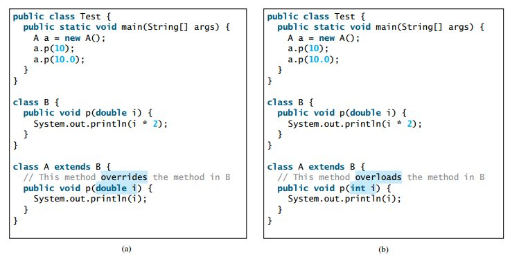
A continuación se muestra el codigo anterior completo para simular:
%%tutor -l java -k
public class MetodosSubClaseSuperClase {
public static void main(String[] args) {
Rectangulo miRectangulo1 = new Rectangulo();
Rectangulo miRectangulo2 = new Rectangulo(8, 6);
Caja miCaja1 = new Caja();
Caja miCaja2 = new Caja(10, 7, 3);
System.out.println("miRectangulo1: "
+ miRectangulo1);
System.out.println("Area de miRectangulo1: "
+ miRectangulo1.area());
System.out.println("miRectangulo2: "
+ miRectangulo2);
System.out.println("Area de miRectangulo2: "
+ miRectangulo2.area());
System.out.println("miCaja1: " + miCaja1);
System.out.println("Area superficial de miCaja1: "
+ miCaja1.area());
System.out.println("Linea 15: Volumen de miCaja1: "
+ miCaja1.volumen());
System.out.println("miCaja2: " + miCaja2);
System.out.println("Area superficial de miCaja2: "
+ miCaja2.area());
System.out.println("Volumen de miCaja2: "
+ miCaja2.volumen());
}
}
class Rectangulo {
private double longitud;
private double ancho;
public Rectangulo() {
longitud = 0;
ancho = 0;
}
public Rectangulo(double l, double a) {
setDimension(l, a);
}
public void setDimension(double l, double a) {
if (l >= 0)
longitud = l;
else
longitud = 0;
if (a >= 0)
ancho = a;
else
ancho = 0;
}
public double getLongitud() {
return longitud;
}
public double getAncho() {
return ancho;
}
public double area() {
return longitud * ancho;
}
public double perimetro() {
return 2 * (longitud + ancho);
}
public String toString() {
return ("Longitud = " + longitud + "; Ancho = " + ancho);
}
}
class Caja extends Rectangulo {
private double altura;
public Caja() {
super();
altura = 0;
}
public Caja(double l, double a, double h) {
super(l, a);
altura = h;
}
public void setDimension(double l, double a, double h) {
super.setDimension(l, a);
if (h >= 0) {
altura = h;
}
else {
altura = 0;
}
}
public double getAltura() {
return altura;
}
public double area() {
return 2 * (getLongitud() * getAncho() +
getLongitud() * altura +
getAncho() * altura);
}
public double volumen() {
return super.area()*altura;
}
public String toString() {
return super.toString() + "; Altura = " + altura;
}
}
En el siguiente enlace se muestra el código online para su ejecución.
Ejemplo 1 (Tomado de Starting Out Java with Early Objects)¶
Muchos profesores asignan actividades con notas a sus estudiantes. Una actividad con nota (graded activity) puede tener un puntaje numerico tal como 70, 85 o 90 entre otros y una nota en letra tal como A, B, C, D or F. La siguiente figura muestra el diagrama UML de la clase GradedActivity la cual se diseñada para mantener el puntaje numerico de una actividad con nota. Esta presenta los siguientes metodos:
setScore: Asigna la nota numerica de la actividad con nota.
getScore: Retorna la nota numerica de la actividad con nota.
getGrade: Retorna el equivalente en letra de la nota numerica.
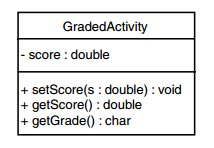
El codigo asociado a la clase anterior se muestra a continuación:
Archivo: GradedActivity.java
/**
A class that holds a grade for a graded activity.
*/
public class GradedActivity
{
private double score; // Numeric score
/**
The setScore method sets the score field.
@param s The value to store in score.
*/
public void setScore(double s)
{
score = s;
}
/**
The getScore method returns the score.
@return The value stored in the score field.
*/
public double getScore()
{
return score;
}
/**
The getGrade method returns a letter grade
determined from the score field.
@return The letter grade.
*/
public char getGrade()
{
char letterGrade;
if (score >= 90)
letterGrade = 'A';
else if (score >= 80)
letterGrade = 'B';
else if (score >= 70)
letterGrade = 'C';
else if (score >= 60)
letterGrade = 'D';
else
letterGrade = 'F';
return letterGrade;
}
}
El código anterior se puede probar online siguiendo el siguiente enlace.
Tal y como se mostro anteriormente, una actividad con nota (representada por la clase GradedActivity) representa las caracteristicas de una actividad con nota. Sin embargo, pueden existir muchos tipos de actividades con notas tales como quizes, parciales, finales, informas de laboratorio y ensayos entre otras. Debido a que los puntajes numericos para cada una de estas actividades puede ser diferente se pueden modelar esto mediante la creación de una subclase; para este caso en especifico el diagrama UML mostrado a continuación, crea la subclase FinalExam la cual hereda de GradedActivity:
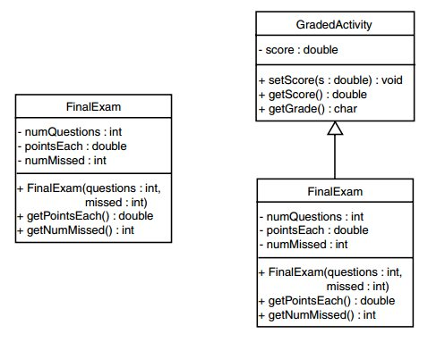
A continuación se muestra el código asociado a la clase FinalExam:
Archivo: FinalExam.java
/**
This class determines the grade for a final exam.
*/
public class FinalExam extends GradedActivity
{
private int numQuestions; // Number of questions
private double pointsEach; // Points for each question
private int numMissed; // Questions missed
/**
The constructor sets the number of questions on the
exam and the number of questions missed.
@param questions The number of questions.
@param missed The number of questions missed.
*/
public FinalExam(int questions, int missed)
{
double numericScore; // To hold a numeric score
// Set the numQuestions and numMissed fields.
numQuestions = questions;
numMissed = missed;
// Calculate the points for each question and
// the numeric score for this exam.
pointsEach = 100.0 / questions;
numericScore = 100.0 - (missed * pointsEach);
// Call the inherited setScore method to
// set the numeric score.
setScore(numericScore);
}
/**
The getPointsEach method returns the number of
points each question is worth.
@return The value in the pointsEach field.
*/
public double getPointsEach()
{
return pointsEach;
}
/**
The getNumMissed method returns the number of
questions missed.
@return The value in the numMissed field.
*/
public int getNumMissed()
{
return numMissed;
}
}
Pregunta: Teniendo en cuenta el codigo anterior ¿Cuantos atibutos y metodos tiene la clase FinalExam?, ¿Cuales con propios y cuales son heredados?
El codigo anterior, se puede mostrar a continuación accediendo al siguiente enlace
Palabra clave super¶
Recordemos que los métodos en las clases derivadas con la misma firma, es decir, igual nombre, tipo de retorno y número y tipo de argumentos que los de la base, anulan o reemplazan (sobreescriben) al método de la base. Pese a esto, es posible invocar le método ocultado desde la clase derivada mediante el uso de la palabra super seguida del nombre del método tal y como se muestra a continuación:
super.nombreMetodo(parametros);
A continuación se muestra el uso de esta palabra clave en la clase derivada (caja) anteriormente mostrada; estos escenarios serán en en constructor y en un metodo de los que alli se implementan:
En el constructor
public Caja() {
super();
altura = 0;
}
En el método para calular el volumen
public double volumen() {
return super.area()*altura;
}
Miembros protegidos de una clase¶
Los miembros de una clase se clasifican en tres categorías:
publicos (
public)privados (
private)protegidos (
protected)
Como ya se vió antes, un miembro publico de una clase pueden ser accedidos desde cualquier otra clase externa a la clase en que se definió dicho miembro. Por otro lado, cuando se define un miembro como privado, este solo puede ser accedido desde la misma clase en que se definió.
A veces es util que una subclase pueda acceder a un miembro de la clae base y es en este caso donde se hace fundamental la declaración en la clase base de dicho miembro como un miembro protegido (protected).
Cuando se usa la palabra clave protected en la declaración de un miembro de la clase base, cualquier clase derivada puede acceder a dicho miembro.
En resumen, si un miembro de una superclase necesita accederse directamente (sólo) por una
subclase, ese miembro se declara utilizando el modificador protected.
El siguiente ejemplo aclara lo anterior:
%%tutor -l java -k
public class ProgMiembroProt {
public static void main(String[] args) {
BClass bObject = new BClass();
DClass dObject = new DClass();
System.out.println("Linea 3: " + bObject);
System.out.println("Línea 4: *** "
+ "Objeto subclase ***");
dObject.setData('&', 2.5, 7); //Linea 5
System.out.println("Linea 6: " + dObject);
}
}
class BClass {
protected char bCh;
private double bX;
//Constructor predeterminado
public BClass() {
bCh = '*';
bX = 0.0;
}
//Constructor con parametros
public BClass(char ch, double u) {
bCh = ch;
bX = u;
}
public void setDatos(double u) {
bX = u;
}
public void setDatos(char ch, double u) {
bCh = ch;
bX = u;
}
public String toString() {
return ("Superclase: bCh = " + bCh + ", bX = "
+ bX + '\n');
}
}
class DClass extends BClass {
private int dA;
public DClass() {
super();
dA = 0;
}
public DClass(char ch, double v, int a) {
super(ch, v);
dA = a;
}
public void setDatos(char ch, double v, int a) {
super.setDatos(v);
bCh = ch; // inicializa bCh utilizando la instruccion
// de asignacion
dA = a;
}
public String toString() {
return (super.toString() + "SubClase dA = " + dA + '\n');
}
}
Nota importante: Cuando se escriben las definiciones de los métodos de la clase DClass, la variable de instancia protegida bCh se puede acceder directamente. Sin embargo, los objetos DClass no pueden acceder de manera directa a bCh. Es decir, la siguiente instrucción es ilegal (de hecho, es un error de sintaxis):
dObject.bCh = '&', //Ilegal
Ejemplo 2 - Usando protected (Tomado de Starting Out Java with Early Objects)¶
El código mostrado a continuación es el mismo del ejemplo 1 del libro Starting Out Java with Early Objects. Aqui, se creo la clase GradedActivity2 la cual es la clase **GradedActivity solo que, en el caso, se define el miembro score no como privado sino como protected.
Archivo: GradedActivity2.java
/**
A class that holds a grade for a graded activity.
*/
public class GradedActivity2
{
protected double score; // Numeric score
/**
The setScore method sets the score field.
@param s The value to store in score.
*/
public void setScore(double s)
{
score = s;
}
/**
The getScore method returns the score.
@return The value stored in the score field.
*/
public double getScore()
{
return score;
}
/**
The getGrade method returns a letter grade
determined from the score field.
@return The letter grade.
*/
public char getGrade()
{
char letterGrade;
if (score >= 90)
letterGrade = 'A';
else if (score >= 80)
letterGrade = 'B';
else if (score >= 70)
letterGrade = 'C';
else if (score >= 60)
letterGrade = 'D';
else
letterGrade = 'F';
return letterGrade;
}
}
El diagrama UML asociado al codigo anterior se muestra a continuación:
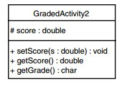
Notese de la figura anterior que cuando un miembro es declarado como protected se emplea el simbolo numeral (#) el diagrama UML para indicar esto. Lo anterior se muestra con el atributo score.
En resumen, en el diagrama UML se usan los siguientes simbolos para representar el nivel de acceso de los atributos:
+: Publico
-: Privado
#: Protegido
Por otro lado, se encuentra la subclase FinalExam2 la cual hereda de la clase GradedActivity2
Archivo: FinalExam2.java
/**
This class determines the grade for a final exam.
The numeric score is rounded up to the next whole
number if its fractional part is .5 or greater.
*/
public class FinalExam2 extends GradedActivity2
{
private int numQuestions; // Number of questions
private double pointsEach; // Points for each question
private int numMissed; // Number of questions missed
/**
The constructor sets the number of questions on the
exam and the number of questions missed.
@param questions The number of questions.
@param missed The number of questions missed.
*/
public FinalExam2(int questions, int missed)
{
double numericScore; // To hold a numeric score
// Set the numQuestions and numMissed fields.
numQuestions = questions;
numMissed = missed;
// Calculate the points for each question and
// the numeric score for this exam.
pointsEach = 100.0 / questions;
numericScore = 100.0 - (missed * pointsEach);
// Call the inherited setScore method to
// set the numeric score.
setScore(numericScore);
// Adjust the score.
adjustScore();
}
/**
The getPointsEach method returns the number of
points each question is worth.
@return The value in the pointsEach field.
*/
public double getPointsEach()
{
return pointsEach;
}
/**
The getNumMissed method returns the number of
questions missed.
@return The value in the numMissed field.
*/
public int getNumMissed()
{
return numMissed;
}
/**
The adjustScore method adjusts a numeric score.
If score is within 0.5 points of the next whole
number, it rounds the score up.
*/
private void adjustScore()
{
double fraction;
// Get the fractional part of the score.
fraction = score - (int) score;
// If the fractional part is .5 or greater,
// round the score up to the next whole number.
if (fraction >= 0.5)
score = score + (1.0 - fraction);
}
}
Las dos clases anteriomente creadas se pueden probar en el siguiente enlace
Acceso protegido contra acceso en el paquete¶
Un paquete es una colección de clases tal y como se muestra en la siguiente figura:
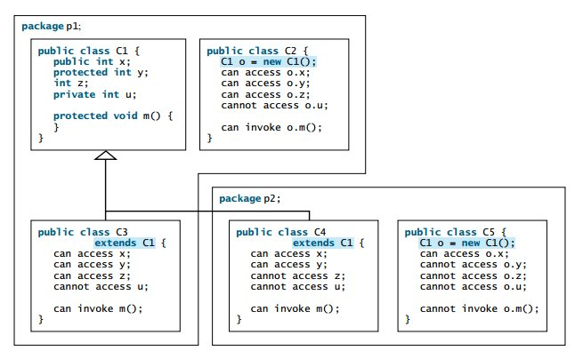
Para utilizar las clases, los métodos y los identificadores existentes, se debe indicar al programa qué paquete contiene la información apropiada. La instrucción import ayuda a hacer esto. La sintaxis general para importar el contenido de un paquete en un programa en Java
import nombrePaquete.*;
Teniendo en cuenta lo anterior, si se quieren importar todas las clases del paquete java.util entonces, según lo anterior, la instrucción a realizar es la siguiente:
import java.util;
Existe tambien el caso en el cual se puede importar una sola clase. Por ejemplo, veamos el caso con la clase Scanner perteneciente al paquete java.util. Si deseamos importar solo esta clase, la instrucción import tendrá la siguiente forma:
import java.util.Scanner;
Cuando un miembro de una clase se declara sin ninguno de los modificadores public, private o protected, entonces el sistema Java otorga a ese miembro el acceso predeterminado por el paquete; es decir, dicho miembro se puede acceder directamente en cualquier clase contenida en ese paquete. Por ejemplo, en el siguiente fragmento de código, todos los miembros de la clase Rectangulo, tendrian acceso predeterminado por paquete:
public class Rectangulo {
double longitud;
double ancho;
public Rectangulo() {
longitud = 0;
ancho = 0;
}
double area() {
return longitud * ancho;
}
//...
}
El acceso por paquete tiene una referencia muy sutil con el acceso protegido tal y como se explica a continuación:
Si un miembro de una clase tiene acceso en el paquete, ese miembro se puede acceder directamente en cualquier clase contenida en ese paquete, pero no en cualquier clase fuera ese paquete.
Si un miembro de una clase está protegido, ese miembro se puede acceder directamente en cualquier subclase incluso si esta última está contenida en un paquete diferente.
Resumen acceso¶
Las siguientes tablas resumen el acceso a variable y métodos segun la visibilidad:
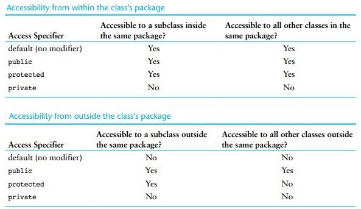
Implementando clases no derivables con el atributo final¶
En el contexto de herencia, la palabra reservada final aplicada a una clase se emplea para impedir que la clase sea derivable; de modo que, cuando se requiere que una clase no pueda extenderse, se declara con el modificador final tal y como se muestra a continuación:
modificador final class NombreClase {
...
}
Si la declaración anterior es empleada, todo intento de definir una subclase a partir de la superclase definida como final generará un error de compilación.
Ejemplo: Definir la clase VideoConsola de tal manera que esta herede de la clase Consola y que no permita crear subclases de ella en otras estructuras.
public final class VideoConsola extends Consola {
...
}
Cadenas y jerarquas de herencia¶
Cadena de herencia¶
Una super clase tambien puede heredar de otra clase y asi sucecivamente, estableciendo una cadena con varias capas. La siguiente figura muestra una cadena de herencia tipica:
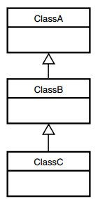
Tal y como se muestra en la figura anterior, la clase C hereda los miembros de la clase B incluyendo aquellos heredados (por la clase B) de la clase A.
Ejemplo 3 - Cadena de herencia (Tomado de Starting Out Java with Early Objects)¶
En el siguiente enlace se muestra el codigo asociado a la siguiente cadena de herencia:
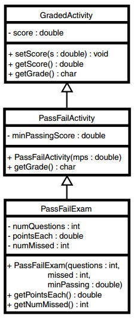
Jerarquia de herencia¶
Consiste en un grafico en forma de arbol que describe las relaciones de herencia entre las clases de manera grafica. Las clases mas generales van hacia arriba y las mas especializadas van hacia abajo.
La siguiente grafica muestra una jerarquia de herencia tipica:
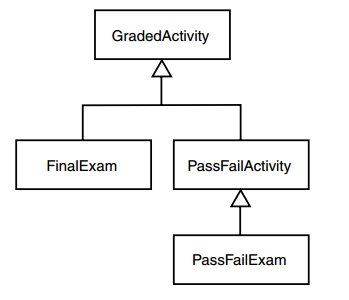
Para contextualizar mas aún se muestran otros ejemplos con jerarquias:
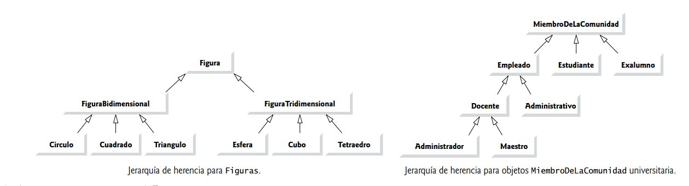
Clase Object¶
Todas las clases en Java heredan, ya sea en forma directa o indirecta de la clase Object (paquete java.lang) de modo que, la clase Object directa o indirectamente se convierte en la superclase de cada clase en Java. Utilizando el mecanismo de herencia, cada miembro público de la clase Object se puede sobreescribir (anular) y/o invocar por cada objeto de cualquier tipo. La siguiente lista muestra algunos de los constructores y métodos de la clase Object
public Object(): Constructor.
public String toString(): Metodo para retornar una cadena para describir el objeto.
public boolean equals(Object obj): Metodo para determinar si dos objetos son iguales. Retorna verdadero si el objeto que invoca al método y el objeto especificado por el parámetro objeto se refieren al mismo espacio de memoria; de lo contrario retorna falso.
protected Object clone() Metodo para retornar una referencia a una copia del objeto que invoca este método
protected void finalize() El cuerpo de este método se invoca cuando el objeto sale de alcance.